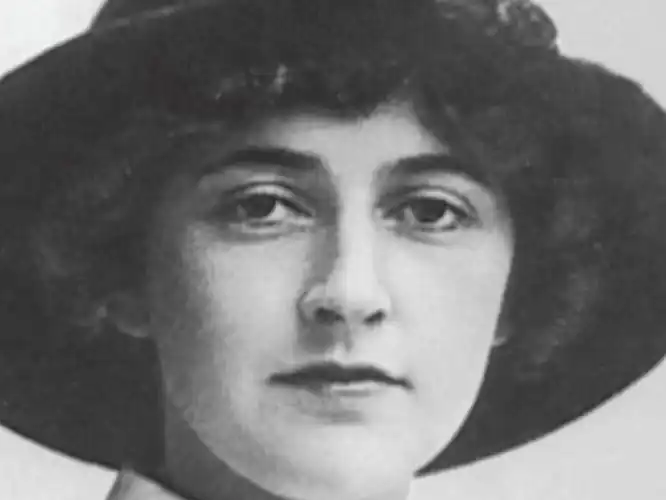
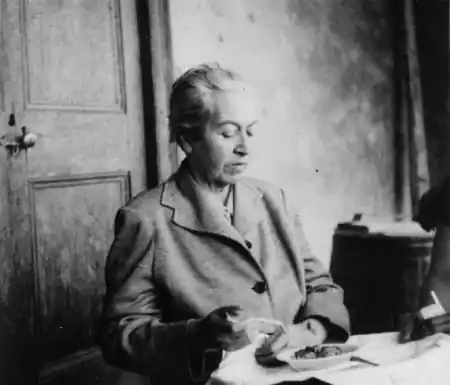

МІСТРАЛЬ, Ґабріела (Mistral, Gabriela, автонім: Алькаягі, Люсіла Годой — 07.04.1889, Вікунья, пров, Кокімбо — 10.01.1957, Хемпстед, шт. Нью-Йорк) — чилійська поетеса, лауреат Нобелівської премії 1945 р.
Слово "містраль" в іспанській мові, якою писала поетеса, означає сильний і холодний північно-західний вітер. Можливо, що в якості псевдоніма вона вибрала ім'я улюбленого на той час італійського письменника Ґабріеле д'Аннунціо та прізвище провансальського поета Фредеріка Містраля (1830—1914), поезія котрого виростала на ґрунті пісень, балад, легенд. повір'їв та звичаїв півдня Франції. У той час, коли Люсіла почала писати вірші, поет був удостоєний Нобелівської премії (1903). Це поетичне ім'я виявилось щасливим і для творчої долі Містраль: вона стала першим представником Латинської Америки, удостоєним Нобелівської премії.
Майбутня поетеса народилася у високогірному селищі Вікунья, що в Андах. її батько. Херонімо Годой Війянуева, індіанець за походженням, працював учителем початкової школи й одночасно був "pallador", тобто людиною, котра віршує для місцевих свят. Він провадив мандрівне життя, постійно відлучаючись від сім'ї. Матір Містраль, Петроніла Алькаяга де Моліна. походила з басків і мала дочку від першого шлюбу. Лише завдяки наполегливості Містраль зуміла здобути освіту. Вчитель за покликанням, мусила працювати з 16 років. Здобувши досвід, очолювала ліцеї в різних містах і містечках країни. Вечорами давала безплатні уроки для дорослих. Про побут і дух чилійської провінційної школи ми дізнаємося зі спогадів П. Неруди, котрий ще хлопчаком спілкувався з директрисою жіночої гімназії Містраль. Ліцей тих років — це "просторий домисько з недоладними класами та похмурими підвалами. Згори, з вікон школи, навесні виднілася річка Каутін, що мальовничо звивалася між порослими дикими яблунями берегами". Навчати доводилося дітей перших поселенців, котрі зовсім не тяглися до книжної мудрості, втікали зі школи на річку та чалапали босоніж по холодній воді, влаштовували побоїща жолудями, якими дорогою до школи набивали повні кишені. І саме їх Містраль зуміла навчити бачити красу рідної землі, "єдиною незабутньою дійовою особою якої була злива. Велика злива південних широт" і жовте та палюче літо, що змінювало її, відчувати близькість океану, "лютість великого моря, снігові хвилі якого — наче пульс всесвіту". Навчила дивуватися чарові закинутих садів, де росли лише маки, що витіснили все інше, й робити закладки в книгах маковими пелюстками червоного шовку. Містраль з надзвичайною відповідальністю ставилася до своїх учительських обов'язків і місії вчительства. Роздуми про своє призначення вона залишила й у творах: "Господи! Ти, хто навчав нас, прости, що я навчаю; що звуся вчителем, як називали тебе на землі... Вирви з моєї душі нечисту жагу помсти, яка все ще бентежить мене, дріб'язкове бажання протесту, яке виникає в мені, коли мене ранять. Нехай не бентежить мене нерозуміння й не завдає прикрощів забуття тих, кого я навчала... Дай мені простоти і дай мені глибини; позбав мій щоденний урок від складності й пустоти... Дай мені відірвати очі від ран на власних грудях, коли я заходжу до школи щоранку. Нехай рука моя буде легкою, коли я караю, і ніжною, коли я голублю. Нехай мене болить, коли я караю, аби знати, що я роблю це з любові. Зроби так, щоби мою цегляну школу я перетворила в школу духу. Нехай порив мого ентузіазму, як полум'я, зігріє її вбогі класи, її порожні коридори. І, зрештою, нагадуй мені з блідого полотна Веласкеса, що вперто вчити і любити на землі — це означає прийти до останнього дня зі зраненими грудьми, палаючими від любові" ("Молитва вчительки"). "Жага помсти", "бажання протесту", "рани на грудях" — все це були глибоко особисті переживання Містраль. Її перші вірші, які здобули успіх і широку популярність, були продиктовані сильним, живим почуттям, що виникло під впливом особистої трагедії — самогубства нареченого, обставини та мотиви котрого зосталися нез'ясованими (припускають, що він заплутався у боргах і застрелився). У своїх "Сонетах смерті" ("Sonetos de la muerte"), удостоєних премії літературного конкурсу 1914 р. у Сантьяго, юна поетеса знаходила примирення з життям у думці про те, що пам'ять про коханого належатиме їй нероздільно, як, приміром, у сонеті "Із ніші зимної...": Із ніші зимної, куди тебе поклали,Віддам тебе землі, убогій і ясній.Що спатиму я в ній — вони того не знали,А снитимемо ми на подушці одній.Як мати любляча, голубляча, якаВ колиску сонного кладе спочити сина, Так буде соняшна земля тобі м'яка.Коли ти ляжеш в ній — знеможена дитина.А потім персть земну й легкийтрояндний прах —У бризках місячних, у голубих пилахРозсію й залишу останки безвагові. Пісні про помсту я складу тоді чудові,Бо інша не сягне в мій потайний куток,Щоб сперечатися за жменю цих кісток.(Пер. І. Качуровського)Переселившись на південь країни, Містраль написала цикл поезій про сина. За оцінкою П. Неруди, "написала їх прозою — чистою, відточеною, іскрометною, тією прозою, котра була найпроникливішою поезією". У цих віршах вона, незаміжня жінка, говорила про вагітність, про пологи, про материнську турботу. І ось містом поповзли якісь непевні поголоси, щось недоладне, наївно-брутальне. Ображена Містраль виїхала з міста. У ту пору це була "висока сеньйора, котра носила довгі сукні та мешти на низьких підборах". П. Неруда писав: "Я бачив, як вона проходить вулицями містечка у своїх довгих уборах, і побоювався її. Та коли мене якось привели до неї, я збагнув, що вона добра та мила. На її смаглявому обличчі, схожому на прекрасну арауканську посудину, на яке наклала свій відбиток індіанська кров, виблискували зуби найбілішої білоти, коли вона широко та лагідно посміхалась, і тоді в кімнаті ставало світліше. Я був занадто юний, аби стати її другом, і надзвичайно замкнений та несмілий. Я бачив її всього декілька разів. Але цього було цілком достатньо. Щоразу я забирав із собою подаровані нею книги..." Містраль не надавала особливого значення своїм віршам, не зберігала записів, не збирала публікацій, роздавала рукописи всім бажаючим. Але з великою відповідальністю ставилася до значних багатотиражних публікацій. Вагалася, чи варто широко обнародувати свої скорботні роздуми. Значною мірою саме цим пояснюється та велика перерва, що відділяє від ранніх публікацій першу збірку поетеси — "Відчай" ("Desolacion"), опубліковану в Нью-Йорку Інститутом іспаномовних літератур. Чилійський уряд запросив Містраль до участі в освітній реформі. Враховуючи популярність Містраль за кордоном, уряд країни надав їй посаду "пожиттєвого консула Чилі" і право вибирати країну перебування. З 1924 р. як чилійський консул перебувала в Італії, Іспанії, Португалії, Бразилії, брала участь у роботі ООН. Багато читала, знала світову літературу. Зустрічалася з Р. Роланом, А. Барбюсом, Максимом Горьким. Відвідала Францію, США, країни Латинської Америки. У віршах Містраль образи світової літератури сусідять з образами латиноамериканського фольклору, їй, що втратила коханого, надзвичайно близьким і зрозумілим виявилось вірне очікування Сольвейг, її побоювання і надії ("Пісні Сольвейг"). Мотивами та образами фольклору Латинської Америки наповнена друга збірка віршів "Тала" ("Таlа", 1938). Цикл "Америка" складається з віршів, самі назви яких свідчать про надзвичайну увагу поетеси та її проникнення у світ і природу рідної землі: "Гімн тропічному сонцю", "Земля Чилі", "Вулкан Осорно", "Водоспад на Ласі", "Краєвид Патагонії", "Мексиканська сосна", "Танок навколо еквадорської сейби", "Аргентинський танок", "Уругвайська пшениця". У її віршах відобразився своєрідний латиноамериканський анімалізм: у них сонце — білий фазан, воно з роду тигрів і людей, золотий гончак та вогненний маїс; водоспад — стрибки сріблястих мавп; вітер — мова голодного гончака, який лиже віття сосон; гілки сейби — мов двадцять змій, що здіймають у небо дах. Містраль вміє передати незвичайну силу та впертість, якими наділене все живе на Землі. Вона бачить взаємозв'язок усього сущого. Вона пише про те, що людина прив'язана до Землі, наче пуповиною до материнського лона. Коли П. Неруду позбавили чилійського громадянства, Містраль була консулом в Рапалло і прийняла його в себе. А на всі офіційні протести заявила, що її двері будуть відчиненими для будь-якого чилійця, який у них постукає. Так вона стала учасницею великої кампанії із врятування поета, до якої долучилися П. Пікассо, Л. Арагон, П. Елюар, котрі залагоджували справи з його документами, коли він прибув у Париж під іменем відомого гватемальського поета Міґеля Анхеля Астуріаса. У 1945 p. Містраль присудили Нобелівську премію з літератури "за поезію справжнього почуття, що зробила її символом ідеологічного устремління для всієї Латинської Америки". У своїй промові член Шведської академії Я. Гульберг сказав: "Віддаючи належне багатій латиноамериканській літературі, ми вітаємо її королеву, творця "Відчаю", котра стала видатним співцем печалі та материнства". У 1954 р. з'явилася збірка поезій "Давильня" ("Lagar"), присвячена трагічній загибелі її близького приятеля С. Цвейга, котрий наклав на себе руки в еміграції у Бразилії у 1942 p., коли Містраль працювала там консулом. Містраль стала автором статей про чилійських письменників. Громадянською сміливістю та загостреним чуттям правди сповнені її роздуми над природою слова і таємницею його сили. Стаття "Прокляте слово" ("La palabra maldita", 1950) розкриває, яким страшним для політиканів може бути слово "мир" Поетеса закликала колег по перу бути безстрашними, не боятися звинувачень у пацифізмі та відсутності любові до батьківщини: "Людство страждає на хронічну втрату пам'яті. Працювати і творити можна лише у дні миру, це загальновідома істина. Вони хочуть зробити людей німими й тому зануреними у відчай. День і ніч працює таємна організація придушення.., і той. хто пише книги, повинен видавати їх потай, як щось ганебне, якщо його книга не служить тим. хто оглуплює інших, якщо він чинить спротив нечуваному побоїщу. Війна — "пароль і відгук патріотизму. "Мир мій нехай буде з вами", — слова Христа, які найчастіше повторюються у Святому Письмі, повторюються з наполегливою одержимістю.